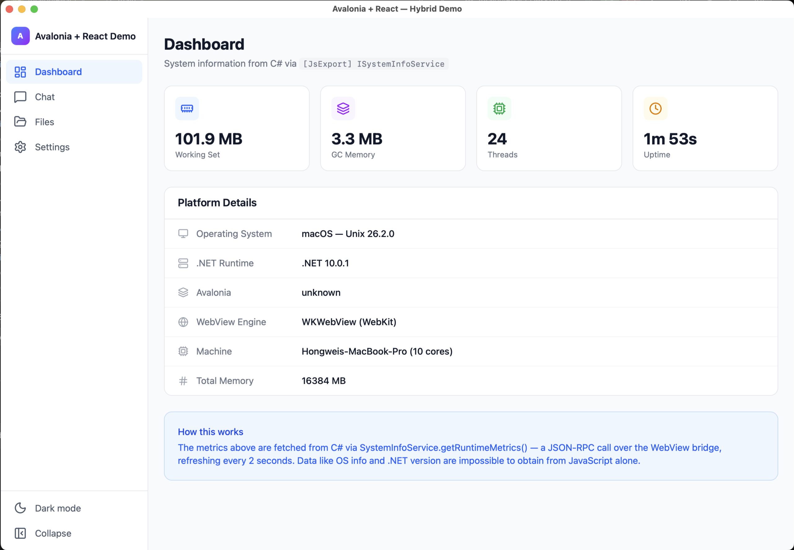
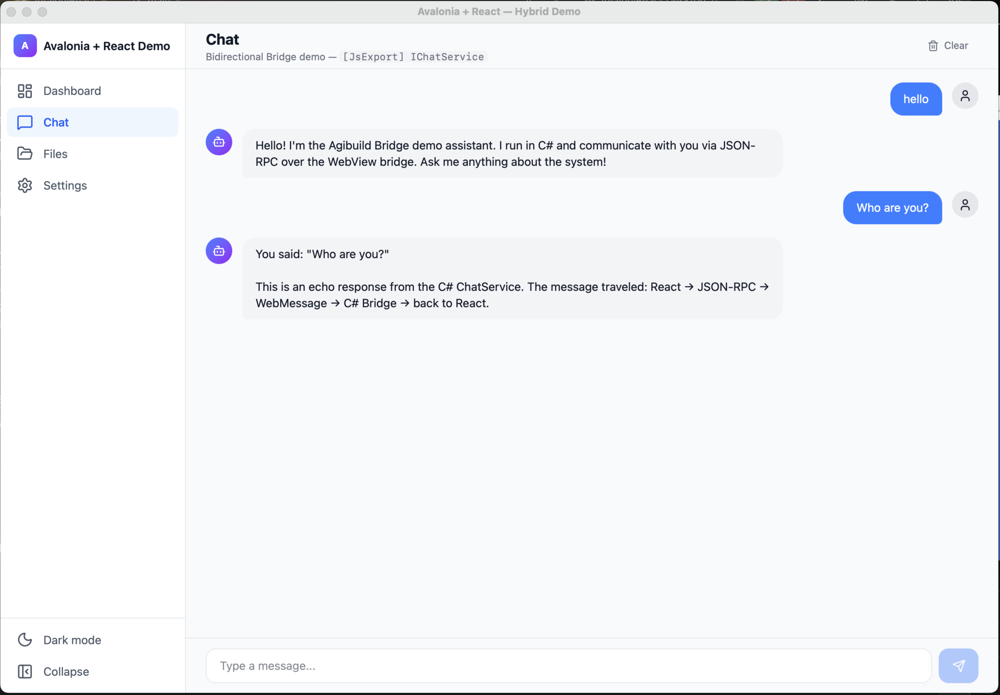
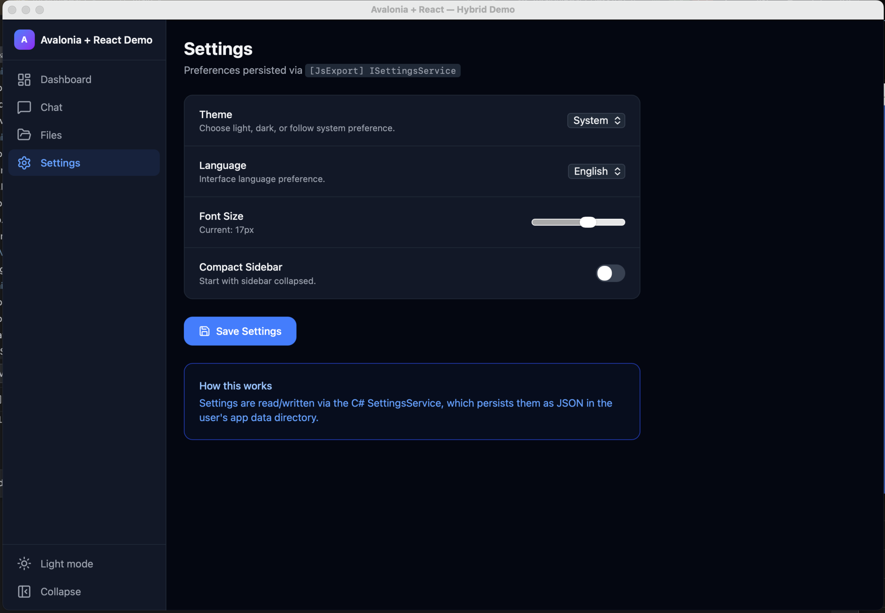

Demo: Avalonia + React Hybrid App
This sample application demonstrates the full capabilities of Agibuild.Fulora — a cross-platform hybrid framework that combines Avalonia's native desktop shell with a modern React frontend, communicating through a type-safe C# ↔ JavaScript bridge.
Source code:
samples/avalonia-react/
Architecture Overview
┌─────────────────────────────────────────────────┐
│ Avalonia Desktop Shell (C# / .NET) │
│ ┌───────────────────────────────────────────┐ │
│ │ WebView Control │ │
│ │ ┌─────────────────────────────────────┐ │ │
│ │ │ React SPA (TypeScript / Tailwind) │ │ │
│ │ └─────────────────────────────────────┘ │ │
│ └───────────────────────────────────────────┘ │
│ ▲ │ │
│ │ JSON-RPC │ │
│ ▼ ▼ │
│ [JsExport] C#→JS [JsImport] JS→C# │
└─────────────────────────────────────────────────┘
The demo contains 4 pages, each showcasing a different bridge capability.
Dashboard — System Metrics via Bridge

The Dashboard page demonstrates read-only data fetching from C# to JavaScript via the bridge.
Key capabilities shown:
ISystemInfoService.getSystemInfo()— Fetches OS name, .NET runtime version, Avalonia version, WebView engine type, machine name, and total memory. This data is impossible to obtain from JavaScript alone.ISystemInfoService.getRuntimeMetrics()— Retrieves live .NET process metrics (working set, GC memory, thread count, uptime) with auto-refresh every 2 seconds.- Metric cards display real-time values with animated updates.
- Platform Details table shows static system information.
Bridge interface:
[JsExport]
public interface ISystemInfoService
{
Task<SystemInfo> GetSystemInfo();
Task<RuntimeMetrics> GetRuntimeMetrics();
}
Chat — Bidirectional Communication

The Chat page demonstrates bidirectional message passing between C# and JavaScript.
Key capabilities shown:
IChatService.sendMessage()— Sends a user message to C# and receives a response. The C# service processes commands liketime,memory,bridge, andhelp.IChatService.getHistory()/IChatService.clearHistory()— Chat history persistence across page navigations, managed entirely in C#.- Optimistic UI — User messages appear instantly while awaiting C# response.
- Error handling — Network/bridge errors are caught and displayed inline.
Bridge interface:
[JsExport]
public interface IChatService
{
Task<ChatResponse> SendMessage(ChatRequest request);
Task<ChatMessage[]> GetHistory();
Task ClearHistory();
}
Files — Native File System Access
The Files page demonstrates native OS capabilities exposed to the web frontend through the bridge.
Key capabilities shown:
IFileService.getUserDocumentsPath()— Retrieves the user's Documents directory path from .NET.IFileService.listFiles()— Lists directory contents with metadata (name, size, modification date, isDirectory).IFileService.readTextFile()— Reads file contents for inline preview.- Breadcrumb navigation — Navigate up/down the directory tree.
- File preview panel — Split-view with text file content rendering.
Bridge interface:
[JsExport]
public interface IFileService
{
Task<string> GetUserDocumentsPath();
Task<FileEntry[]> ListFiles(string path);
Task<string> ReadTextFile(string path);
}
This demonstrates a key advantage of hybrid apps: web UI can access native file system APIs that are restricted in browsers.
Settings — Persistent Configuration

The Settings page demonstrates persistent state management and real-time UI updates via the bridge.
Key capabilities shown:
ISettingsService.getSettings()/ISettingsService.updateSettings()— Read/write user preferences persisted as JSON in the native app data directory.- Theme switching — Light / Dark / System, applied via CSS class toggling with Tailwind CSS v4.
- Multi-language support (i18n) — English, Chinese (中文), Japanese (日本語), Korean (한국어) — UI text updates immediately on language change.
- Font size control — Dynamic root font-size via CSS custom properties, scaling all rem-based Tailwind styles.
- Sidebar state persistence — Compact/expanded sidebar state saved across sessions.
- Cross-component synchronization — Settings changes propagate to the Layout component via custom DOM events.
Bridge interface:
[JsExport]
public interface ISettingsService
{
Task<AppSettings> GetSettings();
Task<AppSettings> UpdateSettings(AppSettings settings);
}
Running the Demo
Prerequisites
- .NET 10 SDK
- Node.js 18+
Steps
# 1. Install frontend dependencies
cd samples/avalonia-react/AvaloniReact.Web
npm install
# 2. Start the Vite dev server (HMR enabled)
npm run dev
# 3. In another terminal, run the Avalonia desktop app
cd samples/avalonia-react/AvaloniReact.Desktop
dotnet run
The app will open a native window with the React SPA loaded inside the WebView, with full bridge connectivity.
Standalone Browser Mode
You can also open http://localhost:5173 directly in a browser for frontend development. A mock bridge stub is provided so the SPA renders without the Avalonia host (bridge calls return placeholder data).
Project Structure
samples/avalonia-react/
├── AvaloniReact.Bridge/ # Shared bridge contracts (C# interfaces + models)
│ ├── Services/ # [JsExport] / [JsImport] interfaces
│ └── Models/ # Data transfer objects (records)
├── AvaloniReact.Desktop/ # Avalonia desktop host
│ ├── MainWindow.axaml # WebView control layout
│ ├── MainWindow.axaml.cs # Bridge service wiring
│ └── Services/ # C# service implementations
└── AvaloniReact.Web/ # React frontend (Vite + TypeScript + Tailwind)
└── src/
├── bridge/ # Auto-generated JS bridge client stubs
├── components/ # Layout, navigation
├── pages/ # Dashboard, Chat, Files, Settings
├── i18n/ # Internationalization (4 languages)
└── hooks/ # useBridge, usePageRegistry
Key Takeaways
| Capability | Demo Page | Bridge Direction |
|---|---|---|
| Read-only data fetching | Dashboard | C# → JS ([JsExport]) |
| Request/response RPC | Chat | C# ↔ JS (bidirectional) |
| Native OS API access | Files | C# → JS ([JsExport]) |
| Persistent state management | Settings | C# ↔ JS (bidirectional) |
| Push notifications to UI | Layout (toast) | JS → C# ([JsImport]) |
| Theme control from C# | Layout | JS → C# ([JsImport]) |
Next Steps
- Getting Started — Set up your own hybrid app
- Bridge Guide — Advanced bridge patterns
- SPA Hosting — Embedded resource serving & dev server proxy
- Architecture — Framework internals